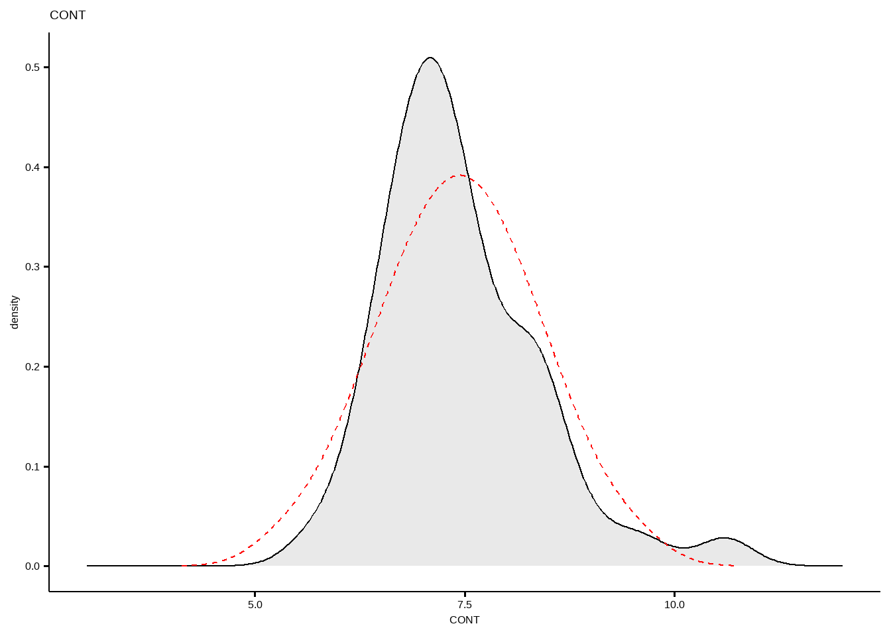

8 正态性检验
Show the code
df <- tibble(
ctrl=c(2,6,13,5,8,9,12,11,8,10,12,14,13,6,7,4),
trt=c(8,6,8,9,12,12,14,15,16,17,14,12,11,8,10,10)
)
df
#> # A tibble: 16 × 2
#> ctrl trt
#> <dbl> <dbl>
#> 1 2 8
#> 2 6 6
#> 3 13 8
#> 4 5 9
#> 5 8 12
#> 6 9 12
#> 7 12 14
#> 8 11 15
#> 9 8 16
#> 10 10 17
#> 11 12 14
#> 12 14 12
#> 13 13 11
#> 14 6 8
#> 15 7 10
#> 16 4 108.1 描述性统计方法
8.1.1 密度图
密度图提供了关于分布是否为钟形的视觉判断

8.1.2 Q-Q图
Q-Q图（或分位数-分位数图）绘制给定样本与正态分布之间的相关性。还绘制了一条 45 度参考线。在 QQ 图中，每个观测值都绘制为一个点。如果数据是正常的，则点应形成一条直线。
Show the code
ggqqplot(df$ctrl)

8.2 基于卡方分布
8.2.1 D’Agostino-Pearson Omnibus Test
D’Agostino-Pearson 综合检验 是基于数据的偏度和峰度来评估数据是否接近正态分布的。

首先计算偏斜度和峰度，以量化分布在不对称性和形状方面与高斯分布的差距。然后，其计算这些值中的每一个与高斯分布的预期值之间的差异，并基于这些差异的总和，计算各P值。这是一种通用和强大的正态性检验，通常推荐使用。但值得注意的是，该建议也有例外。具体而言，当该分布的偏度和峰度非常接近正态分布的偏度和峰度，但肯定是非正态分布时，该检验将无法将该分布确定为非正态分布。

在R语言中，可以使用 moments 包中的 agostino.test() 函数来执行此检验。此检验的原假设是数据来自正态分布，如果检验的p值小于显著性水平（通常是0.05），则可以拒绝原假设，认为数据不服从正态分布。
Show the code
# 样本偏度和峰度
skewness <- moments::skewness(df$ctrl,na.rm = T)
kurtosis <- moments::kurtosis(df$ctrl,na.rm = T)
# 偏度检验
moments::agostino.test(df$ctrl)
#>
#> D'Agostino skewness test
#>
#> data: df$ctrl
#> skew = -0.20140, z = -0.41707, p-value = 0.6766
#> alternative hypothesis: data have a skewness
# 峰度检验
moments::anscombe.test(df$ctrl)
#>
#> Anscombe-Glynn kurtosis test
#>
#> data: df$ctrl
#> kurt = 1.96325, z = -0.99736, p-value = 0.3186
#> alternative hypothesis: kurtosis is not equal to 3
# D'Agostino's K² 检验
K2 <- length(df$ctrl) * (skewness^2 / 6 + (kurtosis - 3)^2 / 24)
p_value <- 1 - pchisq(K2, df = 2)
K2
#> [1] 0.8247351
p_value
#> [1] 0.66208098.2.2 Jarque-Bera 正态性检验
Jarque-Bera检验也是一种基于样本偏度和峰度的正态性检验方法。

Show the code
if(!require(tseries)){install.packages('tseries')}
tseries::jarque.bera.test(df$ctrl)
#>
#> Jarque Bera Test
#>
#> data: df$ctrl
#> X-squared = 0.82474, df = 2, p-value = 0.6621
tseries::jarque.bera.test(df$trt)
#>
#> Jarque Bera Test
#>
#> data: df$trt
#> X-squared = 0.69681, df = 2, p-value = 0.70588.2.3 Pearson’s X2 test
Show the code
nortest::pearson.test(df$ctrl)
#>
#> Pearson chi-square normality test
#>
#> data: df$ctrl
#> P = 2.375, p-value = 0.6671
nortest::pearson.test(df$trt)
#>
#> Pearson chi-square normality test
#>
#> data: df$trt
#> P = 3.25, p-value = 0.51698.3 基于回归和相关
8.3.1 Shapiro-Wilk’s test
Shapiro-Wilk检验而是将数据的实际SD与根据数据的QQ图斜率计算的SD进行比较，并计算其比率。如果数据从高斯分布中采样，则两个值将相似，因此比率将接近1.0，而比率与1相差很大则表明为非正态分布。如果每个值均唯一，则Shapiro-Wilk检验非常有效，但如果几个值均相同，则不那么有效。推荐样本量 7~2000。
这些检验的原假设是“样本分布是正态的”。如果检验显著，则分布为非正态分布。Shapiro-Wilk 方法被广泛推荐用于正态性检验，它提供了比 K-S 更好的功率。 它基于数据与相应的正常分数之间的相关性。
正态性检验对样本量很敏感。小样本通常通过正态性检验。因此，为了做出正确的决定，将图示法和显著性检验结合起来是很重要的。如果样本数量大于 50，则首选正态 QQ 图，因为在较大的样本量下，Shapiro-Wilk 检验变得非常敏感，即使与正态的微小偏差也是如此。
Show the code
map_df(df,~ shapiro.test(.x)[c("statistic","p.value")])| statistic | p.value |
|---|---|
| 0.9607632 | 0.6756693 |
| 0.9655983 | 0.7632600 |
Show the code
df %>% shapiro_test(ctrl,trt)| variable | statistic | p |
|---|---|---|
| ctrl | 0.9607632 | 0.6756693 |
| trt | 0.9655983 | 0.7632600 |
Show the code
ToothGrowth %>%
group_by(dose) %>%
shapiro_test(len)| dose | variable | statistic | p |
|---|---|---|---|
| 0.5 | len | 0.9406451 | 0.2466015 |
| 1.0 | len | 0.9313431 | 0.1638821 |
| 2.0 | len | 0.9777535 | 0.9019115 |
Show the code
# Shapiro Wilk normality test for two variables
iris %>% shapiro_test(Sepal.Length, Petal.Width)| variable | statistic | p |
|---|---|---|
| Petal.Width | 0.9018349 | 0.0000000 |
| Sepal.Length | 0.9760903 | 0.0101812 |
Show the code
# Multivariate normality test
mshapiro_test(iris[, 1:3])| statistic | p.value |
|---|---|
| 0.9908412 | 0.4426676 |
8.4 基于经验分布函数（empirical distribution function）
8.4.1 Kolmogorov-Smirnov (K-S) test
Kolmogorov-Smirnov检验（K-S检验），这是一种非参数检验方法，用于比较一个样本的累积分布函数（CDF）与某个理论CDF的差异。需要指定总体的均值和方差
不建议使用Kolmogorov-Smirnov检验。但在大样本（>2000）实用
Show the code
ks.test(df$ctrl,"pnorm",mean=mean(df$ctrl),sd=sd(df$ctrl))
#> Warning in ks.test.default(df$ctrl, "pnorm", mean = mean(df$ctrl), sd =
#> sd(df$ctrl)): ties should not be present for the one-sample Kolmogorov-Smirnov
#> test
#>
#> Asymptotic one-sample Kolmogorov-Smirnov test
#>
#> data: df$ctrl
#> D = 0.13004, p-value = 0.9496
#> alternative hypothesis: two-sided在执行单样本Kolmogorov-Smirnov检验时，数据中不应该存在“ties”，即不应该有重复的数值。如果存在重复的数值，它会影响检验的有效性，因为K-S检验对数据中的“ties”敏感。此时，可以考虑使用其他对“ties”不敏感的检验方法，例如Shapiro-Wilk检验或Lilliefors检验。
8.4.2 Lilliefors test
Lilliefors test 是一个修改版的K-S检验，它使用样本均值和标准差来标准化数据，然后与标准正态分布进行比较
Show the code
nortest::lillie.test(df$ctrl)
#>
#> Lilliefors (Kolmogorov-Smirnov) normality test
#>
#> data: df$ctrl
#> D = 0.13004, p-value = 0.6656
nortest::lillie.test(df$trt)
#>
#> Lilliefors (Kolmogorov-Smirnov) normality test
#>
#> data: df$trt
#> D = 0.11011, p-value = 0.878.4.3 Anderson-Darling test
Anderson-Darling test 是基于累积分布函数（CDF）的比较，通过计算观测值与理论分布之间的差异程度来评估数据的拟合程度。在R语言中，可以使用 nortest 包中的 ad.test() 函数来执行此检验291011。此检验的原假设同样是数据服从正态分布，如果p值小于显著性水平，则拒绝原假设，认为数据不服从正态分布。对尾部敏感，适用于中等样本量的数据
8.5 数据变换
8.5.1 中度偏度-平方根变换
sqrt(x)对于正偏态数据，sqrt(max(x+1) - x)对于负偏态数据
8.5.2 更偏态-对数变换
log10(x)对于正偏态数据，log10(max(x+1) - x)对于负偏态数据
8.5.3 非常偏态-倒数
1/x对于正偏态数据1/(max(x+1) - x)对于负偏态数据
8.5.4 线性度和异方差性
Linearity and heteroscedasticity
首先，在因变量随着自变量值的增加而开始更快地增加的情况下尝试
log变换如果数据与此相反（因变量值随着自变量值的增加而减少得更快）可以考虑
square变换
| CONT | INTG | DMNR | DILG | CFMG | DECI | PREP | FAMI | ORAL | WRIT | PHYS | RTEN | |
|---|---|---|---|---|---|---|---|---|---|---|---|---|
| AARONSON,L.H. | 5.7 | 7.9 | 7.7 | 7.3 | 7.1 | 7.4 | 7.1 | 7.1 | 7.1 | 7.0 | 8.3 | 7.8 |
| ALEXANDER,J.M. | 6.8 | 8.9 | 8.8 | 8.5 | 7.8 | 8.1 | 8.0 | 8.0 | 7.8 | 7.9 | 8.5 | 8.7 |
| ARMENTANO,A.J. | 7.2 | 8.1 | 7.8 | 7.8 | 7.5 | 7.6 | 7.5 | 7.5 | 7.3 | 7.4 | 7.9 | 7.8 |
| BERDON,R.I. | 6.8 | 8.8 | 8.5 | 8.8 | 8.3 | 8.5 | 8.7 | 8.7 | 8.4 | 8.5 | 8.8 | 8.7 |
| BRACKEN,J.J. | 7.3 | 6.4 | 4.3 | 6.5 | 6.0 | 6.2 | 5.7 | 5.7 | 5.1 | 5.3 | 5.5 | 4.8 |
| BURNS,E.B. | 6.2 | 8.8 | 8.7 | 8.5 | 7.9 | 8.0 | 8.1 | 8.0 | 8.0 | 8.0 | 8.6 | 8.6 |
Show the code
# Distribution of CONT variable
ggdensity(df, x = "CONT", fill = "lightgray", title = "CONT") +
scale_x_continuous(limits = c(3, 12)) +
stat_overlay_normal_density(color = "red", linetype = "dashed")
Show the code
# Distribution of PHYS variable
ggdensity(df, x = "PHYS", fill = "lightgray", title = "PHYS") +
scale_x_continuous(limits = c(3, 12)) +
stat_overlay_normal_density(color = "red", linetype = "dashed")
8.5.5 Box-Cox 幂次变换
Show the code
bc <- car::powerTransform(df)
bc
#> Estimated transformation parameters
#> CONT INTG DMNR DILG CFMG DECI PREP
#> -0.9819079 3.8646573 3.1866054 3.0071768 3.2197291 2.8949756 2.2797376
#> FAMI ORAL WRIT PHYS RTEN
#> 2.0508085 2.4118066 2.2521739 4.9918792 3.3428550
summary(bc)
#> bcPower Transformations to Multinormality
#> Est Power Rounded Pwr Wald Lwr Bnd Wald Upr Bnd
#> CONT -0.9819 0.00 -2.7096 0.7458
#> INTG 3.8647 3.86 2.3656 5.3637
#> DMNR 3.1866 3.19 2.1669 4.2063
#> DILG 3.0072 2.00 1.9536 4.0607
#> CFMG 3.2197 3.22 2.1068 4.3326
#> DECI 2.8950 2.00 1.6568 4.1332
#> PREP 2.2797 2.00 1.5568 3.0026
#> FAMI 2.0508 2.00 1.1463 2.9553
#> ORAL 2.4118 2.00 1.8057 3.0180
#> WRIT 2.2522 2.00 1.5698 2.9346
#> PHYS 4.9919 4.99 3.1346 6.8491
#> RTEN 3.3429 3.34 2.5902 4.0955
#>
#> Likelihood ratio test that transformation parameters are equal to 0
#> (all log transformations)
#> LRT df pval
#> LR test, lambda = (0 0 0 0 0 0 0 0 0 0 0 0) 121.8881 12 < 2.22e-16
#>
#> Likelihood ratio test that no transformations are needed
#> LRT df pval
#> LR test, lambda = (1 1 1 1 1 1 1 1 1 1 1 1) 61.75316 12 1.0794e-08